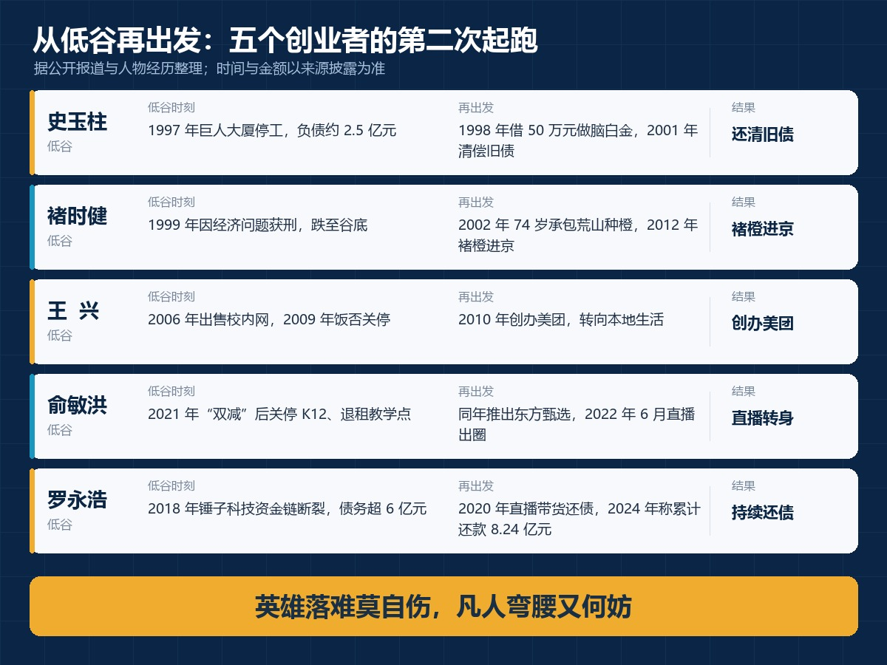

有一段流传的励志文字这样写：秦琼卖马，杨志也曾卖宝刀；韩信受过胯下之辱，越王尝粪把仇报；皇叔织席又贩履，太祖乞讨住过庙。这些故事有的是史实，有的是小说戏曲里的演绎，但共同指向一个朴素的道理：英雄都有落难时，凡人岂能不弯腰。真正决定一个人最终走到哪里的，不是他有没有跌倒，而是跌倒之后能否稳住自己、把账算清、把手上的事重新做起来。
创业尤其如此。成功的叙事通常只留下高光时刻，失败、负债、关停、转型这些段落往往被压缩成一句“后来东山再起”。但把几位创业者的经历摊开来看，低谷从来不是一句口号就能跨过去的，它需要一整套具体的行动：承认失败、守住信用、回到用户、重新组织资源。这段话里最有分量的一句是“英雄落难莫自伤”——人在低谷时，最不该做的就是把一时的挫败当成对自己的终审判决。

一、事实层面：他们经历的低谷都真实存在，转身也都不是偶然
史玉柱的低谷来得极其剧烈。1989 年他带着 4000 元在深圳起步，靠汉卡软件迅速崛起；随后规划中的巨人大厦从十几层加到七十层，预算从数亿元推高到约 12 亿元，资金链最终断裂。1997 年巨人大厦停工，他背上约 2.5 亿元债务，从“首富”变成舆论口中的“首负”。他没有消失，1998 年借来 50 万元，从江苏江阴做脑白金试销，先走访消费者、再用回款滚动扩张，2001 年前后清偿旧债。此后推出《征途》，2007 年巨人网络在纽交所上市。跌到谷底之后，他做的是回到产品、回到现金流、回到履约。
褚时健的低谷则带着命运的沉重。他把玉溪卷烟厂做成亚洲领先的烟草企业，1999 年因经济问题被判无期徒刑，人生从高处直坠。2002 年，74 岁的他保外就医后与妻子在云南哀牢山承包荒山种橙，从零开始研究土壤、肥料、花果管理和销售渠道。2012 年，“褚橙”通过电商进入全国市场。一个曾经掌管大型工业企业的人，晚年重新做起了农民，并用十年时间把一件小事做成了品牌。这里没有捷径，只有日复一日的劳作。
王兴的创业史几乎就是一部“连续跌倒史”。校内网做出规模后因资金压力出售，饭否在 2009 年关停，海内网也未成气候。2010 年，他创办美团，从社交转向本地生活。早期团购是重人力、低毛利的苦生意，他带着团队一家家商户去谈，熬过“千团大战”。后来回看，前几次失败并非全无价值：对产品节奏、资金边界和团队管理的判断，都是在那些挫折里磨出来的。
俞敏洪面对的是行业级拐点。2021 年“双减”落地，新东方关停 K12 核心业务，退租上千个教学点，捐赠课桌椅，市值大幅缩水。同年年底，东方甄选在抖音开播，首场成绩并不亮眼；直到 2022 年 6 月，董宇辉的直播方式意外出圈，东方甄选才真正站稳。这不是一次轻松的“转型成功”，而是在主营业务突然消失后，把教师的教学能力迁移到新的表达场景，并持续押注的结果。
罗永浩的低谷由债务构成。2018 年锤子科技资金链断裂，他对外称欠债 6 亿多元；2020 年 4 月开启直播带货，首场观看人数超 4800 万、交易额约 1.1 亿元。2024 年 8 月，他在公开长文中称累计还款 8.24 亿元，同时说明因诉讼与滞纳等因素，债务总额后来增至约 13 亿元。围绕债务仍有争议，锤子科技也有未了结的执行案件，但一个可见的事实是：他没有用“已经尽力”来停止行动，而是把个人信用变成一件需要持续兑现的事。
二、分析：低谷里真正要守住的东西
首先要稳住的是自己。人在重大挫败后，容易陷入羞耻、愤怒和自我否定，觉得一切都被一次失败定义。这个时候最危险的不是账面上的损失，而是把情绪变成对自己的攻击。低谷不是自伤的理由，更不是惩罚自己的方式。如果情绪持续失控，先向家人、朋友或可信赖的同行开口，必要时寻求专业心理援助。先让自己安全地待住、睡得着、吃得下，才谈得上复盘和再出发。企业的现金流要止血，人的状态同样要先止损。
其次要分清“这次做错了什么”和“我这个人是否完了”。史玉柱后来反复强调现金流和聚焦，是因为巨人大厦的教训足够具体：战线过长、资金错配、对陌生领域估计不足；王兴从社交转向本地生活，不是否定过去的判断，而是把对产品的敏感迁移到更可验证的交易场景。把失败拆成可回答的问题——哪一个假设错了，哪一个环节失控，哪一种资源被高估——失败才会从情绪事件变成经验资产。
第三要用行动重建信用。低谷期最稀缺的不是资金，而是别人愿意再给你一次机会。史玉柱清偿旧债，罗永浩持续还款，褚时健用十年把橙子种出来，本质上都是在做同一件事：用可验证的行为修复信任。信用不是靠解释恢复的，而是靠一次次履约慢慢积累的。对创业者而言，是否按时发薪、是否对供应商结清、是否兑现对用户的承诺，往往是比宣传更重要的资产负债表。
第四要接受“第二次起跑”和第一次完全不同。东方甄选不是新东方的复制品，美团也不是校内网换个名字。很多时候，再创业不是把原来那件事重做一遍，而是把过去积累的能力重新组合：王兴把产品判断力带到交易，俞敏洪把教师表达能力带到直播，褚时健把工业管理经验带进果园。经历没有白费，但必须换一种方式兑现。
三、趋势判断：韧性正在成为创业的硬指标
今天的创业环境变化更快，技术迭代、政策调整和商业模式迁移都会让一家公司在短时间内遭遇断崖。过去谈创业，更多谈胆识、速度和融资；现在越来越多人开始谈现金流纪律、组织韧性和退出机制。这不是变保守，而是对规律的尊重：高峰时留有余地，低谷时才有转身的空间。史玉柱的 2.5 亿元债务、俞敏洪的上千个教学点、罗永浩的 13 亿元债务口径，都在提醒人们，规模扩张与风险承受必须匹配。
另一个变化是，社会对不同人生节奏的宽容度在提高。74 岁种橙、60 岁走进直播间、在负债中重新找赛道，这些故事不再只被看作“晚景”，而被看成另一种可讨论的职业路径。粤港澳大湾区的产业密集、场景丰富，尤其需要这种从失败中快速学习、把经验带回产业的人。一次创业没有跑通，并不等于这个人失去价值；关键是能否把教训沉淀为方法，再投到新的场景里去。
还要看到，励志叙事容易走偏。把低谷浪漫化，会让人忽视那些真实的代价：债务、健康、家庭关系、团队离散都不该被一句“苦难是财富”轻轻带过。真正值得学习的，不是主动去吃苦，而是在苦已经来临时不把它浪费掉。砥砺奋斗不是咬牙硬扛到崩溃，而是承认现实、拆开问题、守住底线，然后一步一步把局面挪回来。
结语
那段文字最后写得好：今日低头非认命，明朝昂首是天骄；低头不是真认输，弯腰只为跳更高。秦琼卖马、杨志卖刀、韩信忍辱、勾践复国，说的是同一个道理——低谷并不取消一个人的资格。对创业者来说，跌倒之后最重要的不是立刻证明自己，而是先稳住身心，再算清旧账，把能做的事一件件做完。待到风云重启日，展露锋芒冲九霄。能走到那一天的人，往往不是从未跌倒的人，而是跌下去之后仍愿意站起来的人。
本文所引人物经历与数据来自公开报道、传记资料及当事人公开表述，不同来源对金额、时间和过程的叙述略有差异，相关分析仅供研究参考，不构成投资、创业或法律建议。